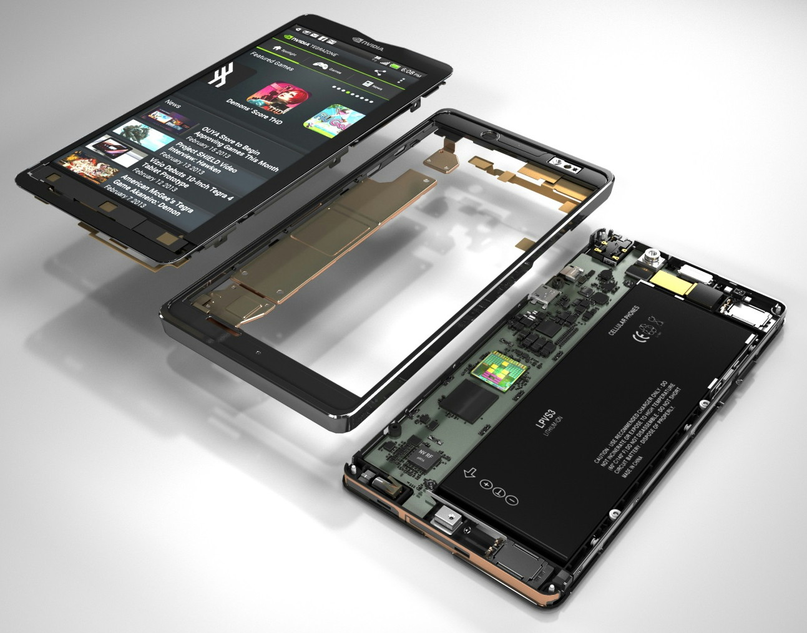

Abstract
Mobile phones have played an important role in everyday life and affected nearly all kind of activities. They are useful communicative equipments within long distances as well as handy tools for entertaining and working. However, not all of us could understand the underlying mechanisms inside those little sophisticating blocks since they are improving marvelously in both technology and design. In fact, they are shrinking but still powerful. Their hardware architecture is becoming computers’. Eventually, they are becoming devices for complex computation, not as simply as making a call anymore. This project will particularly discuss about technology features of advanced phones at a very basic level.
